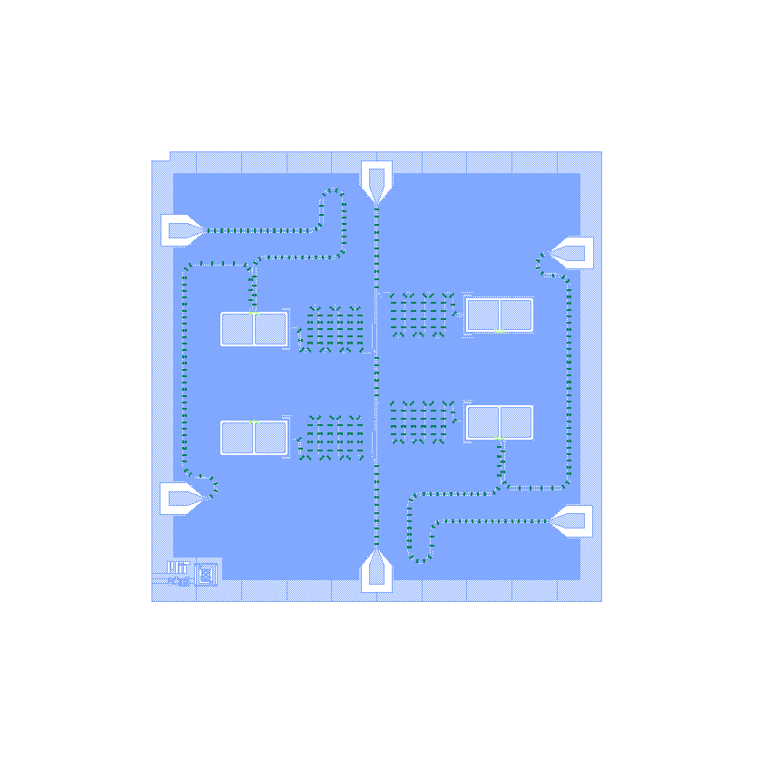

Flux Noise in Superconducting Circuits
[1] D. A. Rower, L. Ateshian, L. H. Li, M. Hays, D. Bluvstein, L. Ding, B. Kannan, A. Almanakly, J. Braumüller, D. K. Kim, A. Melville, B. M. Niedzielski, M. E. Schwartz, J. L. Yoder, T. P. Orlando, J. I.-Jan Wang, S. Gustavsson, J. A. Grover, K. Serniak, R. Comin, and W. D. Oliver. Evolution of 1/𝑓 Flux Noise in Superconducting Qubits with Weak Magnetic Fields. Physical Review Letters (2023). [link]

Superconducting circuits are a promising platform for a variety of
applications - from particle detectors and nanoscale magnetometers
to quantum information processors and quantum simulators. However,
these circuits are plagued by material defects that hinder their
functionality by perniciously leaking away energy and information.
As my first research project pursuing a PhD at MIT with Will Oliver and
Riccardo Comin, I wound a superconducting magnet, wired up a new fridge on campus,
and performed characterization which unveiled new signatures elucidating the microscopic physics
of one particularly mysterious noise ever-present in magnetic-field-sensitive quantum circuits: 1/f flux noise.
As much exploratory characterization goes, our data led to more questions than answers - stay tuned for follow-up studies!
Beyond the technical details, this project represents my first step as an experimental scientist. Having joined the lab without experimental experience -
finding a research direction and piloting a project from the get-go was not easy. I am immensely grateful for the lab's support,
which enabled me to carry out this project and ultimately develop my expertise and interest in superconducting qubits.
Mechanics of Shape Fluctuations in Fluid Membranes
Other Projects
Before I happily resigned to physics, I briefly explored fields from computational drug design to autonomous vehicle control. These projects taught me much, but mostly helped me find my true interests. See my CV for details.